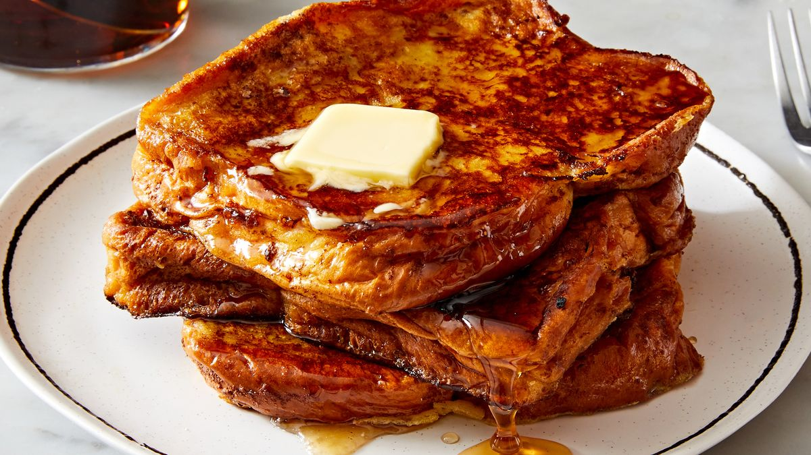

French Toast

All the Information You Need
Take your style to the next level with everything you need to create this dish the best way you can while adding your own spin to it
Ingredients
- White Bread
- Milk
- Eggs
- Vanilla
- Cinnamon
- Salt
- Butter
- Sugar
Recipe Instruction
- Gather all ingredients
- Whisk milk, eggs, vanilla, cinnamon, and salt together in a shallow bowl.
- Lightly butter a griddle or skillet and heat over medium-high heat.
- Dunk bread in the egg mixture, soaking both sides.
- Transfer to the hot skillet and cook until golden, 3 to 4 minutes per side.
- Serve hot.
Return home
Return to Top